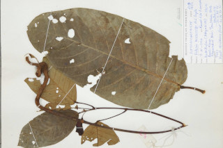
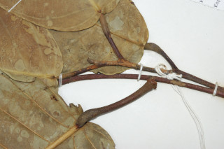

Images :



| Habit : | Trees up to 30 m tall. |
| Leaves : | Leaves simple , alternate , spiral ; petioles 2.5-6 cm long, swollen at apex , minutely pubescent ; lamina 13-30 x 6.5-16 (40 x 20 cm), elliptic-oblong or oblong-lanceolate , apex acuminate with blunt tip, base rounded or subcordate , entire , coriaceous , glabrous or rarely with a few stellate hairs at the base and midrib beneath; midrib raised above; secondary_nerves ca. 19 pairs; tertiary_nerves obliquely_percurrent . |
| Inflorescence / Flower : | Inflorescence in axillary panicles , hoary stellate pubescent ; flowers ca. 3.3 cm across, pedicels 1.5-2.4 cm long. |
| Fruit and Seed : | Capsule , large, ca. 11 x 6 cm with persistent_calyx , lobes reflexed ; seed 1. |